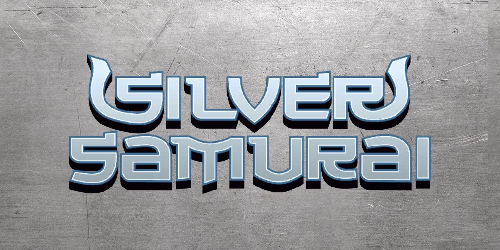
Le Samouraï d'Argent (Keniuchio Harada) (Terre-616)
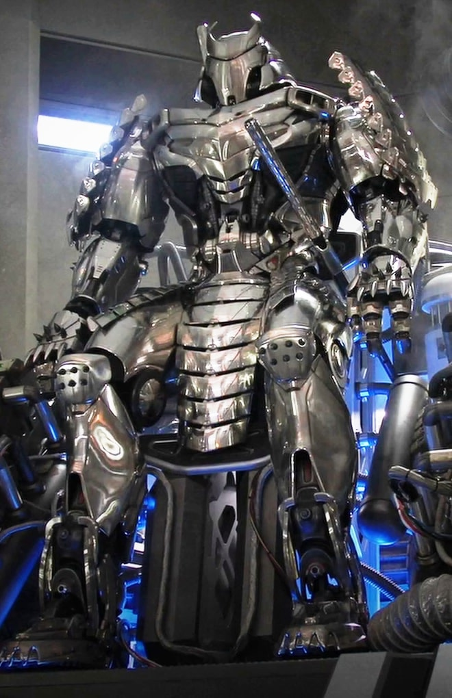
Origines :
Keniuchio Harada est le fils mutant illégitime de Shingen Yashida
Avec son pouvoir générant un champ de tachyons, il transforma le katana de son clan en l'arme la plus tranchante du monde.
Il fut élevé par des maîtres d'armes, entraîné dans de nombreux arts martiaux et devint un puissant guerrier.
Afin de payer la dette d'honneur que son père avait avec le Mandrill, Keniuchio travailla pour son organisation terroriste sous le nom du Samouraï d'Argent, et affronta Daredevil.
Le Samouraï d'Argent fut ensuite engagé par l'HYDRA pour servir de garde du corps à Vipère.
Pour elle, il affronta Spider-Man, la Veuve Noire et les Nouveaux Mutants.
Il prit ensuite la tête du Clan Yashida à la mort de sa demi-sœur Mariko Yashida.
Il fut un grand ennemi de Wolverine à cause des liens qui unissait Mariko et le mutant.
Mais les deux adversaires se sont malgré tout toujours respecté et même parfois entraidés.
Il aida ainsi le X-Man à libérer Jessica Drew de l'influence de la Lame Noire de Muramasa, un katana mystique, qu'il conserva comme trophée.
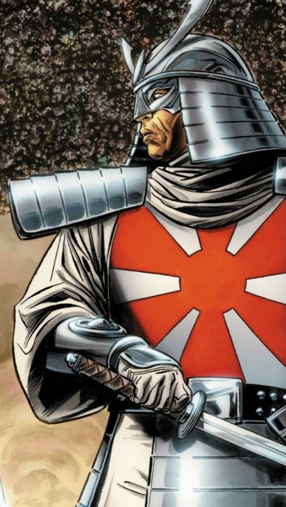
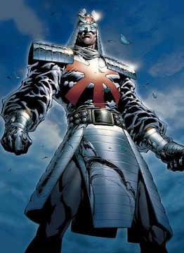
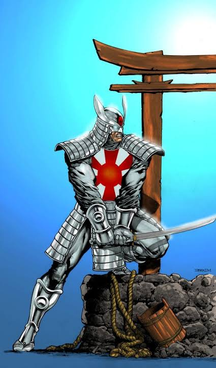
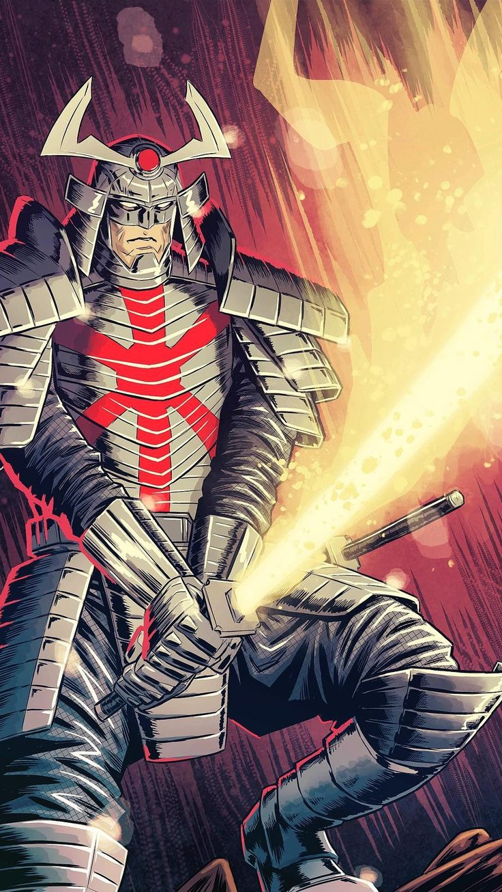
Capacités :
Le Samouraï d'Argent est un mutant capable de générer un champ de tachyons sur les objets qu'il tient.
Il s'en sert le plus souvent sur un katana qui peut alors trancher n'importe quelle matière, à l'exception de l'Adamantium.
Il possède également une grande maîtrise du Bushido.

Apparence :
Le Samouraï d'Argent est généralement représenté comme un imposant guerrier japonais, avec une armure de samouraï traditionnelle composée de matériaux modernes légers et d'argent.
Il porte un kabuto de samouraï très reconnaissable, avec une protection faciale et des ornements rappelant les casques japonais traditionnels.
Il est presque toujours équipé de son katana, généralement porté à la ceinture, qu'il peut charger en énergie grâce à son pouvoir mutant.
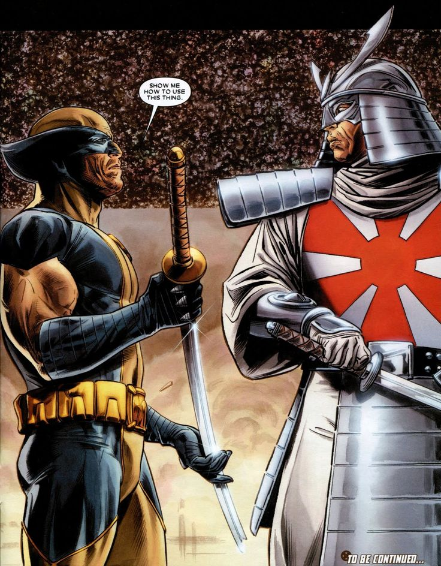
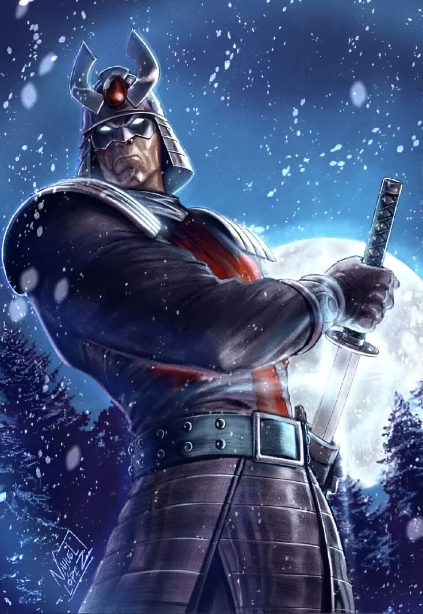
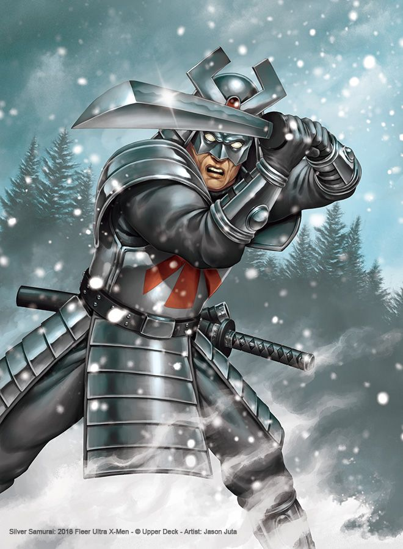

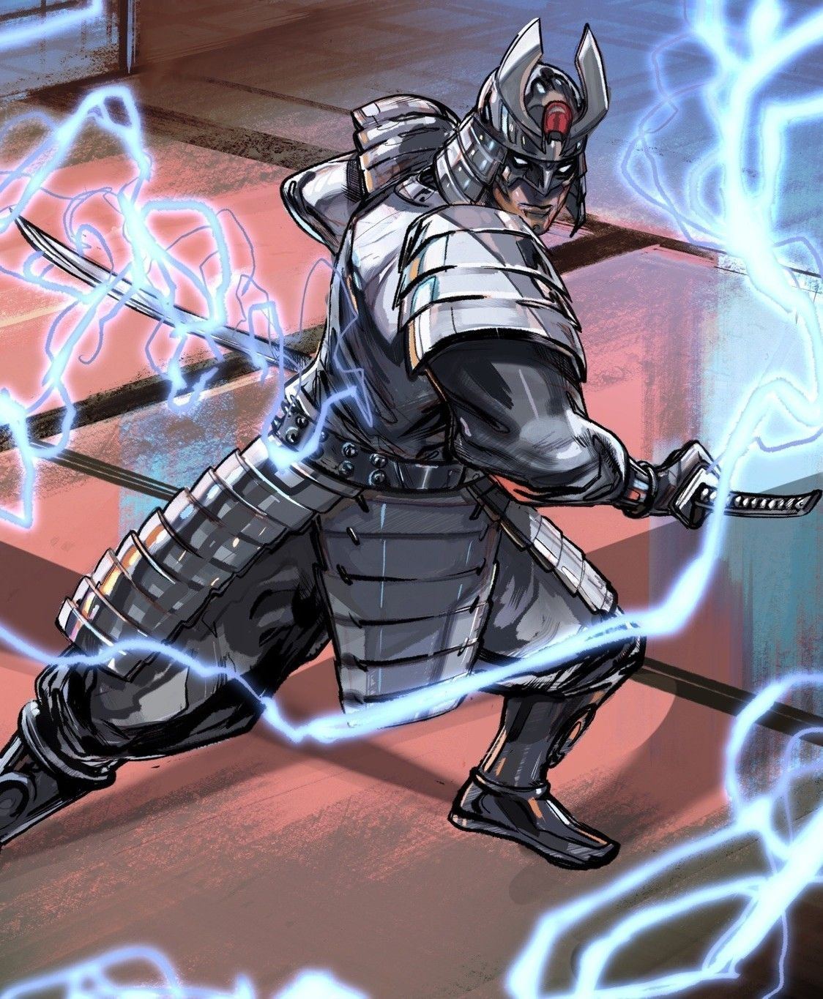
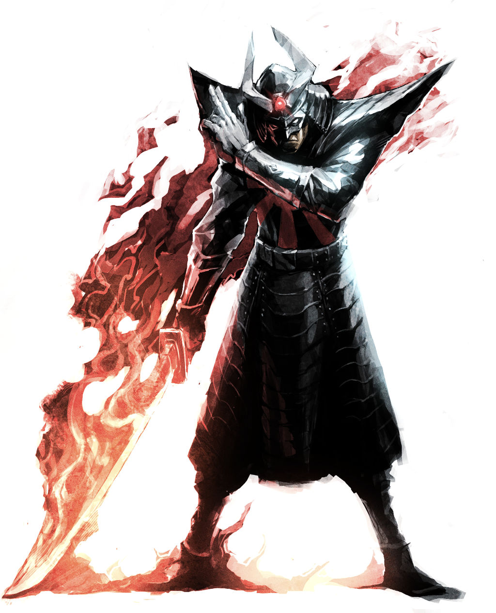
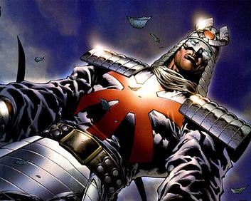
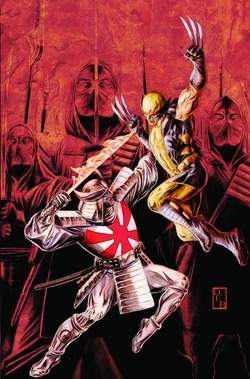